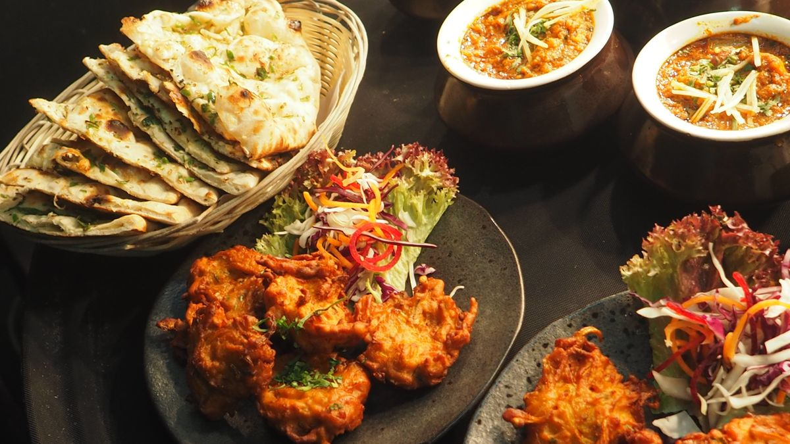

فودینو لانژ
بخش صبحانه و غذاهای سبک فودینو؛ املت بوقلمون و روکولا، شاکشوکا و پلترهای گریل برای شروع روز.
فودینو (سروستان) یک کافه رستوران معمولی نیست؛ مجموعهای سبز در نیاوران با سه فضای لانژ، پرشین و کافه که از صبحانه تا شام، برای هر جمعی یک گوشه دارد. میزتان را همین حالا آنلاین رزرو کنید.

فودینو از چند بخش مستقل تشکیل شده است؛ هر بخش، حالوهوا و منوی خودش را دارد و همه در یک باغ سبز کنار هم نشستهاند.
بخش صبحانه و غذاهای سبک فودینو؛ املت بوقلمون و روکولا، شاکشوکا و پلترهای گریل برای شروع روز.

غذاهای اصیل ایرانی؛ خورش ناردون، دیزی درباری، ماهیچه گوسفندی، جوجهکباب زعفرانی و میگوی دوپیازه بوشهری.

قهوه، دمنوش، میلکشیک و شیرینی؛ در کنار سوشی، پاستا، نودل و سالاد برای یک عصر آرام.

فضای سبز و طبیعت مجموعه، با بخشهای روباز برای نشستن در هوای آزاد؛ جایی برای فرار از شلوغی شهر.

فودینو در مجتمع پارسیان نیاوران، سالهاست پاتوق صبحانه، ناهار و دورهمیهای شمال تهران است؛ مجموعهای که برای هر ساعت روز، یک فضای جدا دارد.
لانژ، پرشین و کافه؛ برای صبحانه، غذای ایرانی یا یک قهوه عصرگاهی، هر بار یک فضای تازه.
فضای سبز مجموعه و بخشهای روباز، فودینو را از رستورانهای معمولی شهر جدا میکند.
از صبحانه و برانچ تا شام کامل؛ منوی فودینو همه ساعتهای روز را پوشش میدهد.
صفحه اینستاگرام ما @foodinogroup با بیش از ۲۰۰ هزار دنبالکننده، فضای مجموعه و منو را بهروز منتشر میکند.
باغ سبز، میزهای روباز و غذاهایی که برای هر ساعت روز آمادهاند.


در فرم رزرو، روز و ساعت، تعداد نفرات و فضای موردنظرتان را مشخص کنید.
برای تأیید روز و ساعت رزرو، با شمارهای که ثبت کردهاید تماس میگیریم.
به مجتمع پارسیان نیاوران بیایید؛ میزتان آماده است.
تهران، نیاوران، سهراه یاسر، انتهای خیابان صادقی قمی، مجتمع پارسیان (جماران).
هر روز از ۹ صبح تا ۱۱ شب.
فودینو لانژ (صبحانه و غذای سبک)، فودینو پرشین (غذای ایرانی) و فودینو کافه (قهوه و نوشیدنی)؛ هر سه در یک مجموعه سبز در نیاوران.
بله؛ فضای بزرگ و بخشهای متنوع مجموعه برای دورهمی و مراسم کوچک مناسب است؛ در فرم رزرو، فضای موردنظرتان را انتخاب کنید.
فرم رزرو همین صفحه را پر کنید یا با شماره ۰۲۱۲۶۱۵۷۵۲۴ تماس بگیرید.
فرم را پر کنید؛ برای تأیید روز و ساعت رزرو با شما تماس میگیریم. اگر ترجیح میدهید مستقیم صحبت کنیم، تماس بگیرید:
۰۲۱ - ۲۶۱۵۷۵۲۴ اینستاگرام: @foodinogroup